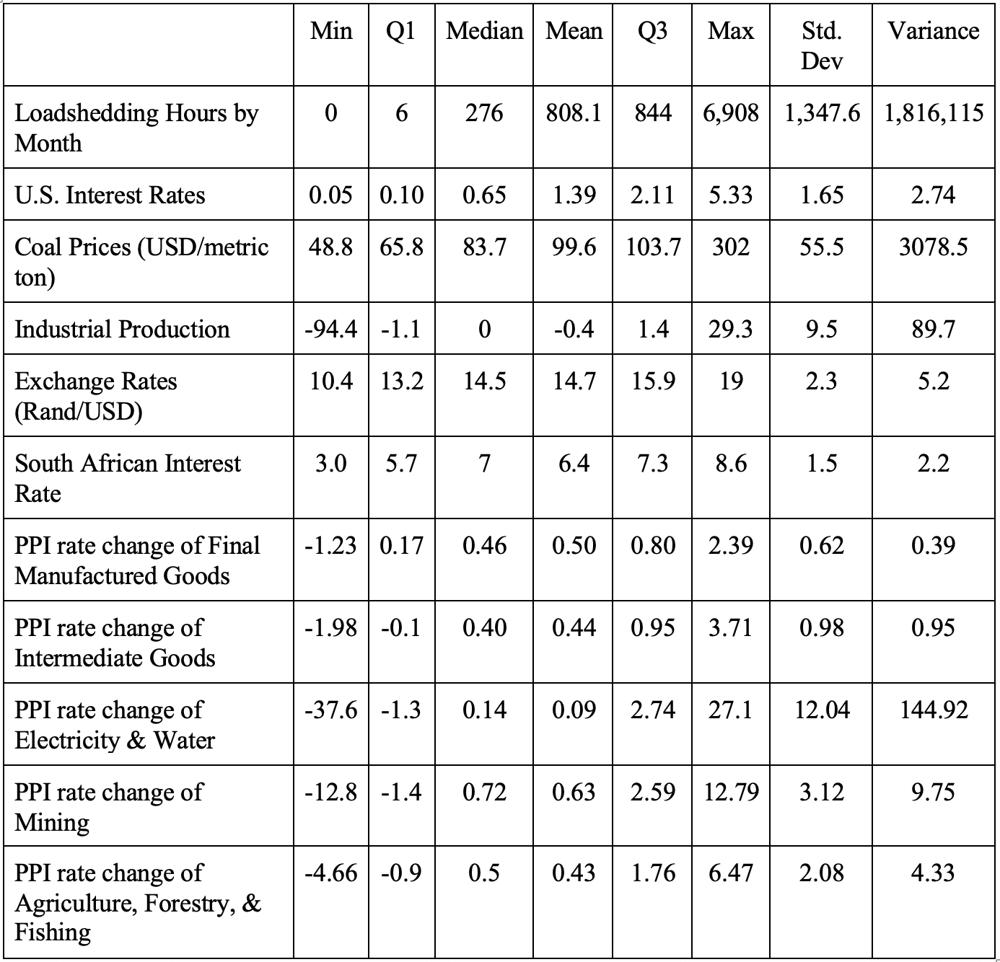
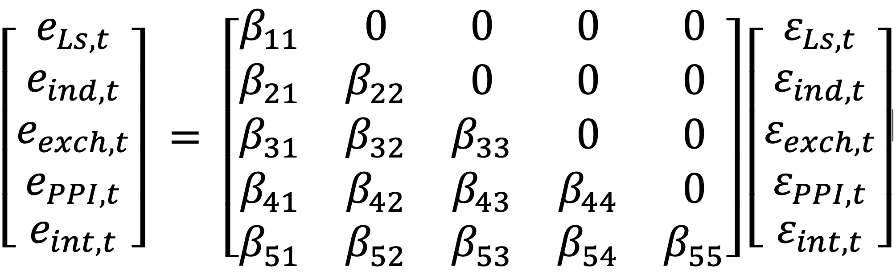
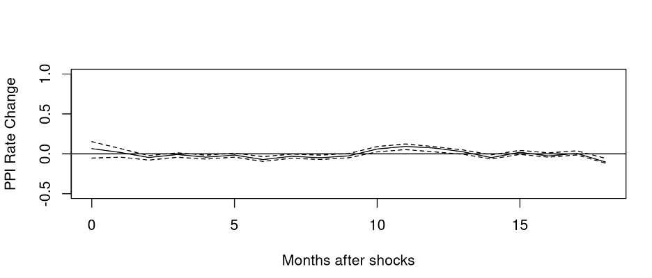
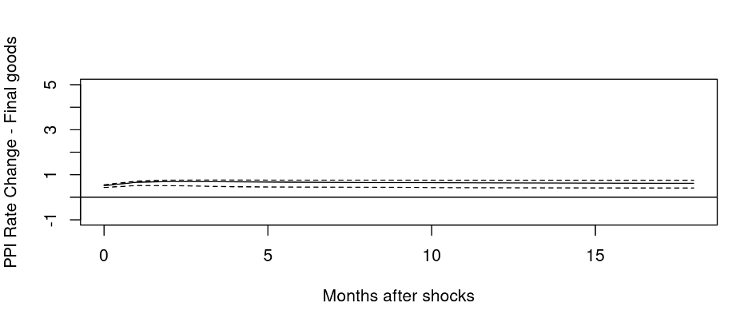
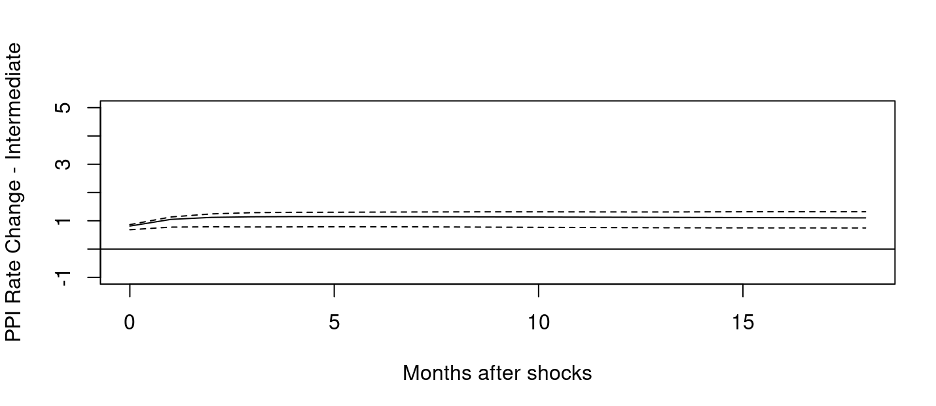
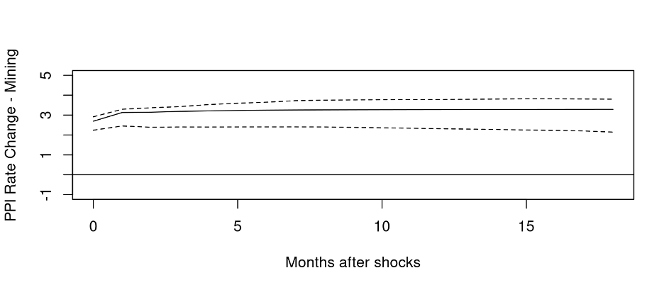
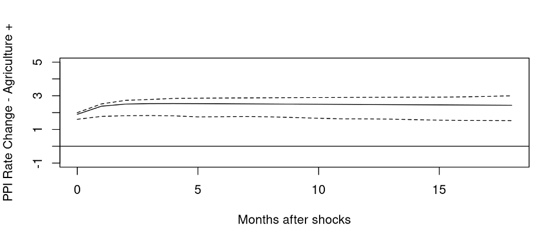
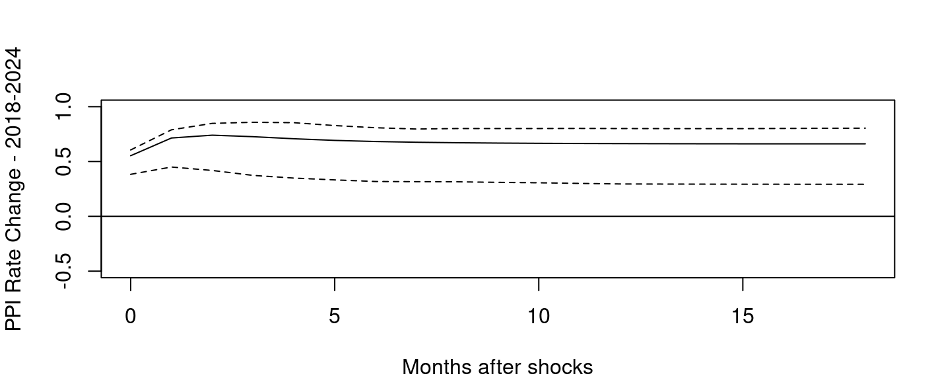

By Cole Kehrberg and Maria Camilli
Introduction
Inside South Africa’s homes and businesses, the lights go out for hours at a time. To preserve energy, South Africa’s national power utility intermittently cuts off power to communities. The process of constricting the energy market by eliminating access in a series of voluntary or planned power outages is called ‘load shedding.’ Load shedding in South Africa began to account for insufficiencies in South Africa’s electrical grid, starting in 2007 and continuing into the present. These routine blackouts have lasting effects on the economy, by slowing economic growth, decreasing productivity, and lowering returns on investment opportunities (Kohler, 2006).
Over 90% of South Africa’s energy comes from Eskom, an electrical company with an ongoing history of mismanagement (International Trade Administration, 2024). Since 1991, the year the apartheid system formally ended, Eskom has only built one power plant while South Africa’s electricity needs only continue to grow. After years of corruption alongside the South African government, and very limited expansion in the face of increased demand, Eskom could not produce at the level of energy that the market demanded, leading to routine load shedding. Because load shedding has become engrained into daily life in South Africa over the last two decades, there is sufficient data to study the long-term effects of these planned power outages on different parts of the economy.
We theorize that constricting the supply of energy to a demanding market will inhibit production. Without reliable energy, restaurants lose food to spoilage, factories are unable to run machines, and communication networks run silent. Beyond production, cutting off energy will also have negative effects for human health, as many critical health services rely on power to operate. From a theoretical economic framework, failing health services will negatively impact labor productivity and human capital. All of these things lead to supply chain disruptions and an erosion of consumer confidence in the government’s handling of the economy. Because limited electricity supply may inhibit the production of goods, labor productivity, and consumer confidence, we expect load shedding to negatively impact production in South Africa. According to the law of supply and demand, when production and supply of goods decrease in quantity, the prices of those goods will increase. Therefore, we expect load shedding to increase the prices of goods, as measured by the Producer Price Index (PPI).
Our research will identify and quantify the effects of load shedding on various measures of PPI. Accounting for control variables, this study will rely on time-series analysis to examine the time period of load shedding between 2014 to early 2024.
1.2 Research Question
How has Eskom’s policy of load shedding energy in South Africa impacted the producer price index for a variety of indices from 2014 to 2024? We hope to explore how electricity blackouts impact different types of inflation, specifically using the producer price index in our analysis.
1.3 Literature Review
The effects of load shedding in South Africa have consequential impacts throughout the economy. According to research by the South Africa Revenue Service, the overall impacts of load shedding on the South African economy may be in excess of 500 billion Rand (~29 billion USD), which accounts for approximately 7-8% of South Africa’s GDP (Erero, 2023). Load shedding causes ruptures to communication networks, job performance, and health and safety, which sends ripple effects throughout the economy. Through our research paper, we intend to identify the impact of load shedding specifically on measures of inflation.
In a case study of a South African coal-fired power station, researchers looked at the short-run and long-run effects of load shedding and the decreasing availability of electricity in the energy sector (Kock & Govender, 2021). In analyzing the relationship between energy prices and South Africa’s economy, researchers found that rising energy costs constrain economic growth due to increased production costs and eliminating market competition. This study provides insight into the behind-the-scenes implications of how production failures at a plant level have significant effects on the national electricity grid scale. While this paper provides strong evidence for the causes and economic consequences of declining electricity supply, it does not specifically quantify the impact of load shedding on price formation in the PPI across different sectors.
Previous research explores the relationship between energy prices and South Africa’s overall economy, as published in the Cogent Economics and Finance Journal. Researchers analyze the relationship between energy prices and South Africa’s overall economy, highlighting how fluctuations in energy costs directly influence output and long-term growth (Takentsi et al., 2022). Their findings highlight how energy price shocks ripple throughout the entire economy. While their research does not explicitly address the impact of load shedding on the energy sector, it does provide additional context.
Additionally, in a study done in the United States and the European Union, researchers found that energy prices lead to an increase in inflation, in part because of their impacts on production (Patzelt and Reis, 2024). In these markets, consumers are relatively inattentive to the prices of energy, however, and therefore underestimate the effect of energy prices on inflation. Therefore, while energy prices impact inflation in these countries, energy prices do not affect inflation expectations, which may dampen the effect on overall inflation. However, in the context of South Africa’s load shedding, where energy is less dependable, firms and individuals must pay attention to how they use energy. Therefore, when the government limits supply of energy and its price increases, people may be more likely to notice these price increases, which may lead to greater inflationary expectations. Greater inflationary expectations theoretically lead to greater levels of inflation, assuming rational consumers.
Research exists to clarify the relationships between load shedding and the South African economy, energy constrictions and economic development, and energy prices and inflation. However, there is no existing literature on the impacts of load shedding on Producer Price Index in South Africa, which is the gap we intend to address.
Data Description
For this project, we have compiled seven datasets of information into one. Firstly, the load shedding dataset includes information from EskomSePush, an app that alerts South Africans about load shedding updates, found on the platform DataDesk. Additionally, we will use a dataset from the Department of Statistics in South Africa that contains the Producer Price Index (PPI) for a variety of sectors of the South African economy. We also found datasets for South African interest rates, U.S. interest rates, the price of coal, South African exchange rates, and a measure of industrial production.
Eskom’s control over the South African electricity grid heavily influenced our chosen time period. Eskom began introducing controlled electricity shut offs in 2007, with these blackouts increasing in frequency and length due to population and industry growth in South Africa (Cumulative Hours of Loadshedding Scheduled by South African Power Utility Eskom by Month from January 2014, 2015). Based on the constraints of our datasets, we narrowed our time period to range from January 2014 to March 2024. The load shedding dataset we plan to work with begins in 2014, which is why our time period starts with 2014. The industrial production dataset ended in March of 2024, so we eliminated 13 observations from our analysis, giving us a total of 122 months of observed data to analyze.
The load shedding dataset quantifies load shedding hours in South Africa, recorded monthly. The key variable featured in this dataset is the column, ‘hours’, which records the number of hours per month that Eskom controls power outages in the country of South Africa. This dataset does not track the number of households or regions affected by load shedding but instead provides a broad overview of this variable over the last 10 years. The variable ‘hours’ ranges from 0 to 6,908 hours per month.
The PPI dataset includes 50 variables and provides an estimate of the PPI of different categories of goods and services in South Africa. The PPI is calculated by measuring the average price of a weighted basket of goods and services in one time period and then comparing this to the price in the base year. This ratio is useful when comparing changes in the price of goods and services from one time period to another. As a component of data cleaning, we converted the variables measuring PPI to rates of change, rather than levels. We included five composites of PPI as variables of interest: ‘final manufactured goods’, ‘intermediate manufactured goods’, ‘electricity and water’, ‘mining,’ and ‘agriculture, forestry, and fishing’.
Before joining our datasets, we cleaned the data to facilitate interpretation. For each dataset, we reformatted and renamed key variables to improve clarity. When each dataset was clean, we assigned each time period a specific ID, allowing us to join the seven datasets easily. We eliminated any observations that included NA values and arranged the observations to be in chronological order. Running calculations on the summary statistics on our data resulted in the following table:
Load shedding data is heavily right skewed, with a median of 276 hours, but a mean of 808.1 hours. Over the years, the amount of load shedding in South Africa has changed dramatically. Several values from the time period of 2016-2018 contain zero hours of load shedding, while the quantity of hours in recent years has been as high as 6,908 hours in December of 2023.
U.S interest rates have been somewhat variable from the 2014-2024, in part because of the economic fallout from the COVID-19 pandemic, which caused interest rates to fall to nearly 0%. While interest rates have remained fairly low, they have been recently raised to combat inflation in the U.S.
Coal prices have also been fairly normal throughout the time period. Although they reached a high peak in 2022, they have stabilized since then and remain around the mean of $99 USD per metric ton.
Alongside most measures of economic growth, industrial production bottomed out in April 2020, with a 94.4% decrease in production. However, South Africa’s industrial output has bounced back, and remains relatively stable around its mean of 0% growth from 2014-2024.
South African exchange rates have nearly doubled from 2014-2024, going from around 10 Rand/USD to around 19 Rand/USD. This signals that the value of the South African Rand has depreciated over time, in comparison to the U.S. dollar. However, in our sample’s time period, the data is distributed fairly evenly, without outliers.
South African interest rates are relatively stable throughout the time period, aside from a huge slash down to 3% during the global COVID-19 pandemic. In the aftermath of the pandemic, interest rates sailed back up, reaching as high as 8.6%, but eventually stabilizing slightly higher than the median 7%. Most of our key indicators of PPI also remain stable, with relatively low variance. However, the PPI rate change of electricity and water are highly variable, regularly containing months where the prices of goods change by double-digit figures. When looking at trends in observations, there appears to be a seasonal element to dramatic price changes in this sector. Therefore, we decided to exclude the PPI rate of change of electricity & water from our final analysis.
Empirical Methods
To accurately analyze the effect of load shedding on South Africa’s Producer Price Index (PPI), we included several control variables that capture macroeconomic forces influencing production costs and prices, and the overall market. We have selected five control variables to reduce variable bias and to account for unexplained variation in the data: South African interest rates, U.S. Interest rates, coal prices in South Africa, industrial production index, and exchange rates between the U.S. and South Africa. We selected control variables that matched monthly frequency and held intuitive economic relevance to our models.
Interest rates are a key control variable because they influence the cost of borrowing in the South African economy and overall investment behavior. Higher interest rates generally reduce investment and production by increasing firms’ overall costs, leading to lower output and slow price growth (Mathai, 2025). Lower interest rates encourage borrowing and stimulate demand in the market. We used a dataset from the Federal Reserve’s Economic Data (FRED), which captures the 90-day Interbank Rates and Yields of South Africa. Controlling for interest rates helps account for monetary policy changes that might confound the relationship between load shedding and PPI.
Coal is one of the primary inputs in South Africa’s energy production, as the electrical company Eskom is heavily reliant on coal-fired power plants. Approximately 85% of South Africa’s electricity is “generated via coal-fired power stations” (International Trade Administration, 2024). Changes in coal prices directly affect electricity costs, impacting both energy availability and production costs. Data on monthly coal prices is found on the World Bank’s Commodity Markets Outlook, which tracks global commodity price trends. The Pink Sheet of World Bank Commodities Price Data reports South Africa’s coal output in $ per metric ton. South African coal use reached an all-time high in 2022 at $240.6 USD/metric ton for the annual average. This value has reduced by over half to $105.8 USD/metric ton in 2024 and this value has continued to decrease at a monthly rate in 2025 (World Bank Commodities Price Data, 2025). Controlling for South African coal prices allows us to differentiate between inflation arising from global energy market shifts and inflationary effects specifically attributed to power outages.
Controlling the U.S. dollar to South African Rand (USD/ZAR) exchange rate helps capture the influence of currency fluctuations on inflation in the South African economy. Exchange rate behavior affects domestic prices and anticipates inflation. Depreciation of the Rand increases the cost of imported goods and production inputs, therefore raising the PPI (Menon, 2018). By controlling for volatility in exchange rate, we can more accurately isolate the domestic effects of load shedding on production costs.
Industrial production measures the real growth in the industrial output of South Africa. Our other control variables help to account for inflation, the value of the Rand, and the electricity sector, so including a control for the output of the South African economy as a whole was important, to capture general market influence.
The control variables of South African and U.S. interest rates, coal prices, exchange rate, and industrial production, allows us to account for key monetary, energy, trade, and output dynamics that jointly influence prices in South Africa. By including these variables, we account for additional important factors to more accurately estimate the causal relationship between load shedding and PPI outcomes from 2014 to 2024.
We decided to use a structural vector autoregressive (VAR-X) model with exogenous variables for this process. Our response variable will be the composite measures of Producer Price Index, with load shedding hours as the explanatory variable. We include industrial production, exchange rates, and interest rates in the model as control variables, while treating coal prices and U.S. interest rates as exogenous.
We selected the optimal lag length for the VAR models using the Bayesian Information Criterion (BIC). The model with the lowest BIC was selected as the optimal lag length.
To draw causal inference, we tracked impulse response functions, which required a Cholesky Decomposition. Because we used 3 endogenous control variables, there are 5 total variables in the equation, when including the explanatory and response variables. The two exogenous variables are not a component of the Cholesky Decomposition because they are not affected by the other variables. Therefore, we require (5*(5-1))/2= 10 restrictions in the Cholesky Decomposition.

The first set of restrictions state that only a shock to load shedding itself will cause an increase in the residual of load shedding in the same month. The second set of restrictions state that only a shock to load shedding and a shock to industrial production will impact industrial production contemporaneously. When unexpected load shedding occurs, we expect that the industrial production will contemporaneously decrease due to a shortage in energy supply. The third set of restrictions assert that only shocks to load shedding, industrial production, and exchange rates will affect exchange rates contemporaneously. With load shedding, a key input of production is limited, immediately impacting the South African economy. Similarly, industrial production is a measure of the South African economy, so a shock to the economy would likely influence the value of currency, measured in exchange rates. The fourth restriction states that shocks to South African interest rates will not affect PPI contemporaneously. Interest rates take a long time to have noticeable impacts on the inflation, so that relationship would not be contemporaneous (Batini & Nelson, 2001).
Results
According to the BIC, the optimal lag length for this model is one lag, which is one month in our time period. This means that the impacts of our variables are best reflected in PPI after one month.
Below are the plots reflecting the preliminary findings of our analysis. Our simplified baseline model, which only includes load shedding hours as a predictor of the rate of change in the PPI of final manufactured goods, showed no statistical significance (Figure 1).

Figure 1: Simplified Model for PPI (final manufactured goods)
However, a VAR-X model, with U.S. interest rates and coal prices held exogenously, and South African interest rates, industrial production, and exchange rates as additional predictors, showed a load shedding shock to have a statistically significant effect on the rate change for the PPI of final manufactured goods (Figure 2). Effects to PPI exist for at least 18 months after the initial shock.

Figure 2: Full VAR-X model for PPI (final manufactured goods)
Similarly, we found a statistically significant impact of a load shedding shock for the rate of change for all composite indices of PPI, including intermediate goods (Figure 3), mining (Figure 4), and agriculture, forestry & fishing (Figure 5).

Figure 3: Full VAR-X model for PPI (intermediate manufactured goods)

Figure 4: Full VAR-X model for PPI (mining)

Figure 5: Full VAR-X model for PPI (agriculture, forestry, & fishing)
Discussion
5.1 Implications
The findings of our research indicate that load shedding has a statistically significant and persistent effect on South Africa’s PPI, with effects lasting more than a year after the initial shock. These results have meaningful implications for both economic policy and firm-level decision making in the South African market. The persistence of the impulse response suggests that disruptions in electricity supply generate sustained pressures in the production process, rather than producing temporary price fluctuations. As a result, efforts to stabilize inflation should not be separated from improving the reliability of the energy sector. Our findings support the proposal that reducing the frequency or severity of load shedding, expanding generation capacity, or improving grid infrastructure will help to mitigate inflationary pressures.
The impact of load shedding on South Africa’s PPI is particularly pronounced in the intermediate goods, mining, and agricultural sectors, which are heavily dependent on continuous access to electricity (Wiese & van der Westhuizen, 2024). By quantifying this sector specific relationship, our findings offer empirical evidence for policy interventions aimed at improving energy security as part of policy strategy to limit increasing rate of inflation.
5.2 Comparisons
The results align with existing literature documenting the adverse economic consequences of load shedding in South Africa. Previous studies demonstrate that energy shortages reduce productive capacity, weaken supply chains, and generate macroeconomic inefficiencies (Kock & Govender, 2021). While this research emphasizes the effects on output and growth, our findings extend the literature by establishing a direct empirical connection between load shedding and price dynamics through a time-series economic framework.
Limitations
Our data on load shedding comes from EskomSePush, an independently operated app that tracks load shedding in South Africa. Because of transparency issues with the South African government, this app is the best source for information, but we cannot verify the reliability of the data. Therefore, any issues with data collection or reporting may impact our results.
Additionally, as a country with some of the highest levels of wealth inequality in the world, inflation in South Africa may hit poor communities especially hard, by limiting their purchasing power through higher prices. Our study did not examine the impacts on consumers, nor did it include a distributional analysis on the impacts on low-income households that may be impacted disproportionately by the economic effects of load shedding. This information may be critical to understanding where the impacts of load shedding are most apparent, affecting how results fit into the context of South African society.
Future Research
Our study also did not examine the effects of load shedding on the electricity and water composite index of PPI because of the high variability in the data. In a future study, we would recommend researching the South African utilities grid about why seasonal changes tend to affect prices. Using this knowledge, we would examine modeling adjustments to account for the seasonal component of that composite’s variability.
Conclusion
Our findings show that South Africa’s policy of restricting electricity supply to the grid, via the process of load shedding, drives inflation across several sectors of the South African economy, as measured in four key composites of Producer Price Index.
We used a VAR-X model to account for the endogenous control variables of industrial production, exchange rates, and South African interest rates, while treating U.S. interest rates and coal prices exogenously. The results show that load shedding has the largest effect on the PPI composite index of mining and the index of agriculture, forestry, and fishing, but results are also significant for intermediate and final goods. Overall, we found load shedding to have a statistically significant effect on all sectors of PPI.
Our findings support our hypothesis and the existing literature, which suggest that load shedding drives inflation because of its impact on production. We believe that policies aimed at slowing the implementation of load shedding may help to curb inflation in South Africa. Because energy insecurity disproportionately harms lower income households and smaller producers, policies that aim to reduce the frequency and severity of load shedding may not only stabilize the economy but also help mitigate the structural inequalities built into South Africa’s economy.
Robustness Check
Between 2016 and 2018, there was a brief pause in load shedding in South Africa, creating a gap in our data. To see if our significant results hold after this break in load shedding, we shortened our time frame to include only 70 observations from June 2018 to March 2024. We found that the impulse response functions from the VAR-X model delivered roughly the same results in this smaller time frame, still showing statistical significance, as shown in Figure 6.

Figure 6: Subsample analysis on rate change of PPI - final manufactured goods
Works Cited
Batini, N., & Nelson, E. (2001). The Lag from Monetary Policy Actions to Inflation: Friedman Revisited. International Finance, 4(3), 381–400. https://doi.org/10.1111/1468-2362.00079
Board of Governors of the Federal Reserve System (US). (1971, January 1). South African Rand to U.S. Dollar Spot Exchange Rate. FRED, Federal Reserve Bank of St. Louis. https://fred.stlouisfed.org/series/EXSFUS
Cumulative hours of loadshedding scheduled by South African power utility Eskom by month from January 2014. (2015). Datadesk.co.za; Eskom Se Push. https://www.datadesk.co.za/app/dataset/93444f35-1062-4f62-9527-6e71fdbaa6bd/cumulative-hours-of-loadshedding-scheduled-by-south-african-power-utility-eskom-by-month-from-january-2014?utm_
Erero, J. L. (2023). Impact of Loadshedding in South Africa: A CGE Analysis. Journal of Economics and Political Economy, 10(2), 78–94. https://journals.econsciences.com/index.php/JEPE/article/view/2448/3196
Federal Reserve Bank of St. Louis. (2025). Effective Federal Funds Rate. Stlouisfed.org. https://fred.stlouisfed.org/series/FEDFUNDS
International Trade Administration. (2024, January 26). South Africa Country Commercial Guide-Energy. Www.trade.gov. https://www.trade.gov/country-commercial-guides/south-africa-energy
Kock, Z., & Govender, K. K. (2021). Load-shedding and the Declining Energy Availability Factor: A Case Study of a South African Power Station. Mediterranean Journal of Social Sciences, 12(6), 128. https://doi.org/10.36941/mjss-2021-0063
Kohler, M. (2006). The Birchwood Hotel and Conference Centre Johannesburg, South Africa The Economic Impact of Rising Energy Prices: A Constraint on South Africa’s Growth and Poverty Reduction Opportunities. https://www.tips.org.za/files/forum/2006/papers/KholerEconomicImpact.pdf
Mathai, K. (2025). Monetary Policy: Stabilizing Prices and Output. International Monetary Fund. https://www.imf.org/en/Publications/fandd/issues/Series/Back-to-Basics/Monetary-Policy
Menon, S. (2018, October 25). Struggling rand means producer inflation could well spike. Business Day. https://www.businessday.co.za/bd/economy/2018-10-25-struggling-rand-means-producer-inflation-could-well-spike/
Organization for Economic Co-operation and Development. (1980, December 1). Interest Rates: 3-Month or 90-Day Rates and Yields: Interbank Rates: Total for South Africa. FRED, Federal Reserve Bank of St. Louis. https://fred.stlouisfed.org/series/IR3TIB01ZAM156N
P0142.1 - Producer Price Index (PPI). (2025). Statssa.gov.za; Department of Statistics: South Africa. https://www.statssa.gov.za/?page_id=1861&PPN=P0142.1&SCH=74230
Patzelt, P., & Reis, R. (2024). Estimating the Rise in Expected Inflation from Higher Energy Prices. UK Research and Innovation. https://personal.lse.ac.uk/reisr/papers/99-oilanchoring.pdf
Production, Sales, Work Started and Orders: Production Volume: Economic Activity: Manufacturing for South Africa. (2024). Stlouisfed.org. https://fred.stlouisfed.org/series/ZAFPROMANMISMEI
Takentsi, S., Sibanda, K., & Hosu, Y.-S. (2022). Energy prices and economic performance in South Africa: an ARDL bounds testing approach. Cogent Economics & Finance, 10(1). https://doi.org/10.1080/23322039.2022.2069905
Wiese, M., & van der Westhuizen, L.-M. (2024). Impact of planned power outages (load shedding) on consumers in developing countries: Evidence from South Africa. Energy Policy, 187, 114033–114033. https://doi.org/10.1016/j.enpol.2024.114033
World Bank. (2025). Commodity Markets. World Bank. https://www.worldbank.org/en/research/commodity-markets